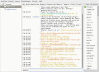

HexChat
Dieser Artikel wurde für die folgenden Ubuntu-Versionen getestet:
Ubuntu 16.04 Xenial Xerus
Ubuntu 14.04 Trusty Tahr
Zum Verständnis dieses Artikels sind folgende Seiten hilfreich:
HexChat  ist ein grafischer IRC-Client mit umfangreichen Konfigurations- und Erweiterungsmöglichkeiten durch Plugins und Skripte. Als GTK+-Programm integriert es sich vorzüglich in die Desktop-Umgebungen GNOME, Xfce, LXDE und MATE.
ist ein grafischer IRC-Client mit umfangreichen Konfigurations- und Erweiterungsmöglichkeiten durch Plugins und Skripte. Als GTK+-Programm integriert es sich vorzüglich in die Desktop-Umgebungen GNOME, Xfce, LXDE und MATE.
|  |
| HexChat |
Es handelt sich um eine plattformunabhängige Weiterentwicklung von XChat und ist für die Betriebssysteme GNU/Linux, Mac OS X und Windows erhältlich. Im Gegensatz zu XChat beherrscht das Programm SASL nativ (ohne Plugins; die empfohlene Methode zur automatischen Anmeldung). Allen Umsteigern sei zusätzlich der Abschnitt Migration von XChat am Ende des Artikels empfohlen.
Installation¶
 Ab Ubuntu 14.04 kann die Installation [1] direkt über die offiziellen Paketquellen erfolgen:
Ab Ubuntu 14.04 kann die Installation [1] direkt über die offiziellen Paketquellen erfolgen:
hexchat (universe)
 mit apturl
mit apturl
Paketliste zum Kopieren:
sudo apt-get install hexchat
sudo aptitude install hexchat
Optional kann noch folgendes Paket installiert werden, um Meldungen über den Benachrichtigungsdienst ausgeben zu lassen:
libnotify-bin (universe)
mit apturl
Paketliste zum Kopieren:
sudo apt-get install libnotify-bin
sudo aptitude install libnotify-bin
PPA¶
Die aktuelle stabile Version steht über ein "Personal Packages Archiv" (PPA) [2] zur Verfügung. Dieses ist auch für ältere Ubuntu-Versionen geeignet.
Adresszeile zum Hinzufügen des PPAs:
ppa:gwendal-lebihan-dev/hexchat-stable
Hinweis!
Zusätzliche Fremdquellen können das System gefährden.
Ein PPA unterstützt nicht zwangsläufig alle Ubuntu-Versionen. Weitere Informationen sind der  PPA-Beschreibung des Eigentümers/Teams gwendal-lebihan-dev zu entnehmen.
PPA-Beschreibung des Eigentümers/Teams gwendal-lebihan-dev zu entnehmen.
Damit Pakete aus dem PPA genutzt werden können, müssen die Paketquellen neu eingelesen werden.
Nach dem Aktualisieren der Paketquellen erfolgt die Installation wie oben angegeben.
Verwendung¶
Bei Ubuntu-Varianten mit einem Anwendungsmenü erfolgt der Programmstart [3] über "Internet → HexChat", ansonsten über die Eingabe des Programmnamens. Im ersten Schritt erfolgt grundsätzlich die Wahl des "Nickname" (wenn noch keiner existiert). Bei den Punkten "Zweite Wahl" und "Dritte Wahl" sollte man ebenfalls einen Namen eintragen, weil bei einem ungeplanten Verbindungsabbruch der Nutzer noch eine Zeitlang als Geist im IRC-Netzwerk herumspukt und deswegen die Neuverbindung mit einem alternativen "Nickname" erfolgen muss.
Anschließend kann man die Server auswählen und einrichten, zu denen man sich verbinden möchte.
Achtung!
Wenn man das Passwort für die automatische Authentifizierung eines IRC-Kontos in den Einstellungen für einen Server hinterlegt, dann wird dieses Passwort unverschlüsselt - im Klartext - in der Datei ~/.config/hexchat/servlist.conf mit dem Eintrag P=PASSWORT hinterlegt. Die Entwickler verweisen in Issue #518 dabei auf die gleiche Begründung, die auch schon die Entwickler von Pidgin in ihrer Stellungnahme zu Plain Text Passwords veröffentlicht haben. Ein Dialog für die Passwortabfrage wurde in Issue #519 ebenfalls abgelehnt. Als einzige Alternative ohne Passwortspeicherung bleibt also, keine automatische Authentifizierung zu verwenden und sich erst nach dem Beitritt händisch bei einem Server anzumelden.
Serverliste und Channel¶
In der Serverliste werden die Netzwerke und Channel eingestellt, denen HexChat beim Start entweder automatisch oder nur bei Bedarf beitreten soll. Die mitgelieferte Liste ist bereits sehr umfangreich und kann auch um eigene Server erweitert werden. Unter dem Menüpunkt "HexChat → Netzwerkliste..." kann man diese Serverliste jederzeit einsehen und bearbeiten. Die Channel für das ubuntuusers.de-Portal sind im Wiki-Artikel IRC aufgeführt.
Des Weiteren bestehen in dem Dialogfenster diverse Konfigurationsmöglichkeiten, darunter automatisch zu betretende Channels, Benutzerinformation, Zeichenkodierung usw.
Um einen Channel zu öffnen, gibt es zwei Möglichkeiten:
Eine komplette Channelliste für den Server kann man sich über "Server → Liste aller Kanäle" oder "Server → Betrete einen Channel → Empfange Channelliste" anzeigen lassen. Zusätzlich kann man auch mit Stichworten nach Channels suchen.
Kennt man den Namen des Channels, kann man diesen durch die Eingabe des Befehls
/join #channelnamebetreten.
Nutzt man die integrierte Befehlseingabe, kann man auch mehrere Channel gleichzeitig betreten. Zum Beispiel:
/join #ubuntuusers,#ubuntu-de,#hexchat
Sofern ein oder mehrere Channels mit einem Passwort geschützt sein sollten, ändert sich die Syntax folgendermaßen:
/join #ubuntuusers,#ubuntu-de,#hexchat Passwortubuntuusers,Passwortubuntu-de,PasswortvonHexChat
Tastenkürzel¶
Es gibt zwei (bzw. drei) Arten von Tastenkürzeln:
die der jeweiligen Desktop-Umgebung
die fest in HexChat einprogrammierten und
die frei anpassbaren.
Die fest einprogrammierten sind auch im HexChat-Menü zu finden. Also z.B. Strg + W für "HexChat → Netzwerkliste ..." oder Alt + X + S . Die frei anpassbaren können über "Einstellungen → Tastenkürzel" eingesehen und neue mittels "Einstellungen → Tastenkürzel → Hinzufügen" konfiguriert werden.
Designs¶
Die Farben zur Hervorhebung des Textes im Chatfenster lassen sich innerhalb des Programms anpassen. Am Schnellsten geht das über die Verwendung von vordefinierten Farbschemata (Themes). Dazu beendet man HexChat und lädt sich von der Projektseite ein Farbschema  mit der Endung .hct (HexChat Theme) herunter und entpackt diese Datei in den Ordner ~/.config/hexchat/. Evtl. vorhandene Dateien (
mit der Endung .hct (HexChat Theme) herunter und entpackt diese Datei in den Ordner ~/.config/hexchat/. Evtl. vorhandene Dateien ([Content_Types].xml, colors.conf, pevents.conf) werden dabei überschrieben und sollten daher vorher gesichert werden. Die Standardeinstellung bringt man über die Datei Default.hct zurück. Mehr Informationen liefert die offizielle Dokumentation .
Beispiel (FARBSCHEMA durch das gewünschte Design ersetzen):
cd ~/.config/hexchat wget http://dl.hexchat.org/themes/FARBSCHEMA.hct unzip -o THEME.hct
Skripte und Plugins¶
Für HexChat gibt es ergänzende Skripte und Plugins. Dabei bedienen sich die Skripte bei Plugins für bestimmte Programmiersprachen (sog. Sprachplugins). Neben diesen Sprachplugins gibt es auch noch weitere für verschiedene Anwendungsfälle. Eine Übersicht findet man im Menü über "Fenster → Plugins und Skripte".
Sprachplugins¶
Zur Zeit gibt es zwei integrierte Sprachplugins für HexChat:
Perl-Skripte sind am populärsten, es gibt aber auch einige Skripte in Python.
Weitere Plugins¶
Im gleichen Menü kann eine Liste installierter Add-Ons (Erweiterungen) eingesehen werden. Vorinstalliert sind derzeit:
"Do At" - kein Zeitplaner, sondern ermöglicht die gleichzeitige Ausführung von Befehlen in mehreren Kanälen
"Checksum" - berechnet die Prüfsumme einer via DCC gesendeten oder empfangenen Datei mit SHA-256 (siehe auch den Abschnitt Dateitransfer)
"FISHLiM
" - Nachrichten verschlüsseln"Sysinfo" - Programmversion, Betriebssystem und Hardwareinformationen
Diese und weitere verfügbare Add-Ons sind in der offiziellen Dokumentation beschrieben.
Eigene Skripte und Plugins, die automatisch beim Programmstart geladen werden sollen, speichert bzw. kopiert man in den Ordner ~/.config/hexchat/addons/. Alternativ kann man sie aus einem beliebigen Pfad über "Fenster → Plugins und Skripte" manuell laden oder entladen. Das Entladen klappt bei Skripten nicht immer und eventuell muss man daher auch das dazugehörige Sprachplugin entladen.
Dateitransfer¶
Im IRC werden Dateien über ein Protokoll namens DCC übertragen. Hierbei bauen die beteiligten IRC-Programme direkte Datenverbindungen zueinander auf. Im Gegensatz zu den normalen Nachrichten, die an den Server gesendet und von dort weitergeleitet werden. Man spricht dabei von einer "relay"-Funktion.
Empfang von Dateien¶
HexChat zeigt Dateitransfer in einem separaten Fenster/Reiter an. Sollte das Programm diese nicht automatisch öffnen, kann man dies von Hand über den Menüeintrag "Fenster → Dateitransfers" nachholen. Unten sieht man dann die zwei Schaltflächen "Annehmen" und "Abbrechen", welche die Aktion für den ausgewählten Eintrag aus der Liste oberhalb ausführen. Abbrechen kann man immer, dabei werden aktive und wartende Transfers abgebrochen bzw. gar nicht erst begonnen und bereits abgebrochene Transfers aus der Liste entfernt.
Die Dateien werden in dem Verzeichnis gespeichert, das man unter "Einstellungen → Optionen → Dateitransfers" angegeben hat. Anmerkung: Wenn eine Verbindung beim Empfangen nicht zustande kommt, liegt dies normalerweise am Sender.
Senden von Dateien¶
Das Senden von Dateien ist auf mehrere Arten möglich. Außerdem können hierbei häufiger Schwierigkeiten auftreten.
Drag & Drop ins Query-Fenster¶
Man öffnet ein Query-Fenster oder auch einen "Dialog" mit einem einzelnen Teilnehmer. Hier kann man direkt mit dem jeweiligen Benutzer Nachrichten (über den Server) austauschen. Aus dem Lieblings-Dateimanager zieht man einfach eine gewünschte Datei in dieses Query-Fenster (drag) und lässt den Mausknopf los (drop). HexChat wird dann versuchen, dem jeweiligen Benutzer diese Datei zu senden.
Aus dem Menü heraus¶
Man klickt mit der rechten Maustaste  auf einen Benutzernamen, entweder in der Benutzerliste oder im Chatfenster, und wählt dann im Kontextmenü "Datei senden". Daraufhin öffnet HexChat den bekannten Dateiauswahldialog, man wählt eine Datei, klickt auf "OK" und das Programm versucht, sie an den ausgewählten Benutzer zu übertragen.
auf einen Benutzernamen, entweder in der Benutzerliste oder im Chatfenster, und wählt dann im Kontextmenü "Datei senden". Daraufhin öffnet HexChat den bekannten Dateiauswahldialog, man wählt eine Datei, klickt auf "OK" und das Programm versucht, sie an den ausgewählten Benutzer zu übertragen.
Hinweis:
Diese Art von Kontextmenüs können vollständig angepasst werden und können daher auch bei jedem Benutzer anders aussehen. Wenn der erwähnte Eintrag also nicht vorhanden ist, muss man das Menü anpassen oder wählt eine andere Methode, um einen Dateitransfer zu starten.
Von Hand¶
Ist der Menüeintrag nicht vorhanden und man will trotzdem die Datei mit dem Dateiauswahldialog auswählen, kann man folgenden HexChat-Befehl verwenden:
/dcc send <nick>
Hierbei muss man natürlich <nick> durch den entsprechenden Benutzer- bzw. Nicknamen ersetzen. HexChat öffnet den Dialog und ab der Transfer läuft wie oben erklärt ab.
Wenn man Pfad und Dateinamen kennt, können diese Angaben auch gleich übergeben werden:
/dcc send <nick> "/pfad/mit Leerzeichen/zur/Datei.ext"
Anmerkung: Die Anführungsstriche braucht man nur, wenn der Pfad oder der Dateiname Leerzeichen enthalten.
Probleme beim Senden¶
Es gibt verschiedene Umstände, die das Senden von Dateien behindern können. Diese werden mit unterschiedlichen Lösungsansätzen adressiert.
Lösung 1 - Passiver DCC Modus¶
Normalerweise agiert der Sender als aktiver Server für den Dateitransfer und der Empfänger entsprechend als Client dieses Servers. Kann der Sender allerdings aufgrund von technischen Begebenheiten (Firewal, NAT o.ä.) nicht als DCC-Server fungieren, kann man versuche,n mit einem alternativen Befehl die Übertragung passiv zu initiieren:
/dcc psend <nick> /dcc psend <nick> "/pfad/mit Leerzeichen/zur/Datei.ext"
Hinweis:
Hierfür gibt es in der Regel keinen Menüeintrag. Diesen kann man aber bei Bedarf selbst ergänzen.
Lösung 2 - Konfiguration der Ports für den Dateitransfer¶
Beschwert sich der Empfänger, dass die Verbindung nicht hergestellt werden konnte, liegt dies oft am Portforwarding der Firewall oder des Routers bzw. am Fehlen dieses Forwardings. Für jeden simultanen auswärtigen Transfer muss man einen Port weiterleiten ("forwarden"). Will man immer nur eine Datei zur Zeit senden, konfiguriert man einen Port. Da über 65.000 Ports zur Verfügung stehen, kann man aber ruhig mehrere aufeinander folgende Ports entsprechend konfigurieren.
Um einen Portbereich ("range") freizugeben (beispielsweise von 5000 bis 5010, also elf Ports), geht man wie folgt vor:
In HexChat unter "Einstellungen → Optionen → Dateitransfers → Netzwerkeinstellungen" legt man im Abschnitt Dateitransfer ersten und letzten Port des Bereichs fest.
An der Firewall oder im Router konfiguriert man einen freigegebenen Portbereich, was im Detail individuell für die Software bzw. das Gerät in Erfahrung zu bringen ist. Das Stichwort für eine Recherche dazu lautet "port forwarding" oder auch "Ports freigeben".
Bevor man nun Dateitransfers startet, sollte man eine weitere Einstellung in HexChat "Einstellungen → Optionen → Dateitransfers → Netzwerkeinstellungen" vornehmen. Dort sollte an der Checkbox "Hole meine IP vom Server" ein Haken gesetzt sein (es kann auch ohne diese Option klappen, aber das hängt von der Routerkonfiguration ab).
Lösung 3 - BNCs¶
Klappt ein Dateitransfer trotz korrekter Netzwerk- und Routereinstellung immer noch nicht, so liegt es eventuell am Bouncer (BNC), den einer der Transferteilnehmer verwendet. Einzige mögliche Abhilfe ist dann, den BNC abschalten.
Lösung 4 - Andere Ursachen¶
Es kann sein, dass eine "höhere Gewalt" transferverhindernd eingreift. Eventuell werden die verwendeten Ports vom Internet-Provider (ISP) (einer) der Teilnehmer geblockt oder das IRC-Programm auf einer oder gar beiden Seiten ist einfach fehlerhaft? Im Falle des Programms kann man dann eine andere Version oder eine ganz andere Software versuchen, aber mit dem Provider (ISP) über Portfreigaben zu verhandeln, ist in der Regel nicht möglich.
Anonyme Chats mit Tor¶
HexChat unterstützt anonyme Chats über Tor ohne DNS-Leaking. Wie man das Programm konfigurieren muss, steht im Artikel Tor - Programme zur Nutzung von Tor konfigurieren.
Problembehebung¶
Zeichensatzkodierung UTF-8¶
Der IRC-Client sollte auf UTF-8 eingestellt werden, da diese Zeichensatzkodierung zum Beispiel auch im Ubuntuusers-Channel (und vielen anderen) eine wichtige Voraussetzung ist.
"HexChat → Netzwerkliste..." öffnen ( Strg + S )
entsprechenden Server in der Liste auswählen und "Ändern"
im Reiter "Server" unter "Zeichensatz" im Aufklappmenü "UTF-8 (Unicode)" auswählen
und HexChat neu starten nicht vergessen!
IRC-Links im Firefox mit HexChat verknüpfen¶
Hin und wieder trifft man im Internet auf IRC-Links. Diese beinhalten meist einen IRC-Server und einen Channel. Damit sich beim Klick auf den Link HexChat öffnet, muss man etwas an der Firefox-Konfiguration verändern.
Browser zum Öffnen von Links festlegen¶
IRC-Links werden je nach Desktop-Umgebung mit dem jeweiligen Standardbrowser geöffnet. Möchte man diesen ändern, kann man im Alternativen-System den gewünschten Browser durch die Einstellung von x-www-browser umstellen.
Migration von XChat¶
Eine Migration der Konfiguration von XChat ist mit wenigen Änderungen problemlos möglich. Dazu kopiert man das Konfigurationsverzeichnis in den entsprechenden Pfad für HexChat [5]:
cp -R ~/.xchat2 ~/.config/hexchat
Anschließend müssen einige Konfigurationsdateien umbenannt werden:
mv ~/.config/hexchat/xchat.conf ~/.config/hexchat/hexchat.conf mv ~/.config/hexchat/servlist_.conf ~/.config/hexchat/servlist.conf mv ~/.config/hexchat/xchatlogs ~/.config/hexchat/logs
Zusätzlich unterscheidet sich die Syntax der servlist.conf für die Einträge der automatisch zu verbindenden IRC-Kanäle. XChat verwendet eine einzeilige Auflistung:
J=#kanal1,#kanal2,#usw.
HexChat dagegen eine mehrzeilige Liste:
J=#kanal1 J=#kanal2 J=#usw.
Diese Änderung kann entweder mit einem Texteditor von Hand vorgenommen werden oder mit folgendem Befehl auf alle Einträge angewendet werden [5]:
sed -i 's/,#/\nJ=#/g' ~/.config/hexchat/servlist.conf
Das Konfigurationsverzeichnis von XChat (~/.xchat2) kann bei Bedarf nach der Migration gelöscht werden.
Siehe auch How do I migrate my settings from XChat? in der HexChat-FAQ und den Blogbeitrag Switching from Xchat to HexChat .
Synchronisation¶
Man kann auch Cloud-Dienste wie OwnCloud oder Dropbox zur Synchronisation von Einstellungen, Gesprächen etc. nutzen, um mit unterschiedlichen Computer darauf zugreifen zu können. Es sollte darauf geachtet werden, dass vor der ersten Synchronisation stets eine Sicherung der zu synchronisierenden Daten vorgenommen wird, da manche Programme durch Fehler bei der Synchronisation nicht mehr (richtig) starten können.
Ein Beispiel für OwnCloud [6]:
ln -s ~/ownCloud/hexchat/ ~/.config/hexchat
Hinweis:
Daten sollten bei fremden Anbietern nicht unverschlüsselt gespeichert werden. Eine Lösung via EncFS wird im Artikel Cloud-Dienste beschrieben.
Links¶
Offizielle Dokumentation
- auch als PDF-Datei FAQ
- häufige Fragen und Antwortenhexchat-addons
- Plugins and scripts made for HexChat
Firefox/Tipps - IRC-Links mit HexChat öffnen
Switching from Xchat to HexChat
- Blogbeitrag, 03/2013IRC
 Programmübersicht und Grundlagen
Programmübersicht und Grundlagen
- Erstellt mit Inyoka
-
 2004 – 2017 ubuntuusers.de • Einige Rechte vorbehalten
2004 – 2017 ubuntuusers.de • Einige Rechte vorbehalten
Lizenz • Kontakt • Datenschutz • Impressum • Serverstatus -
Serverhousing gespendet von